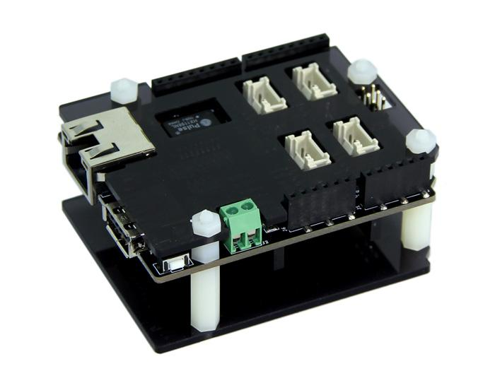
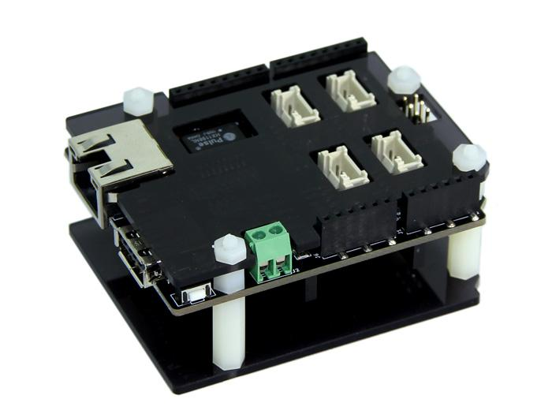
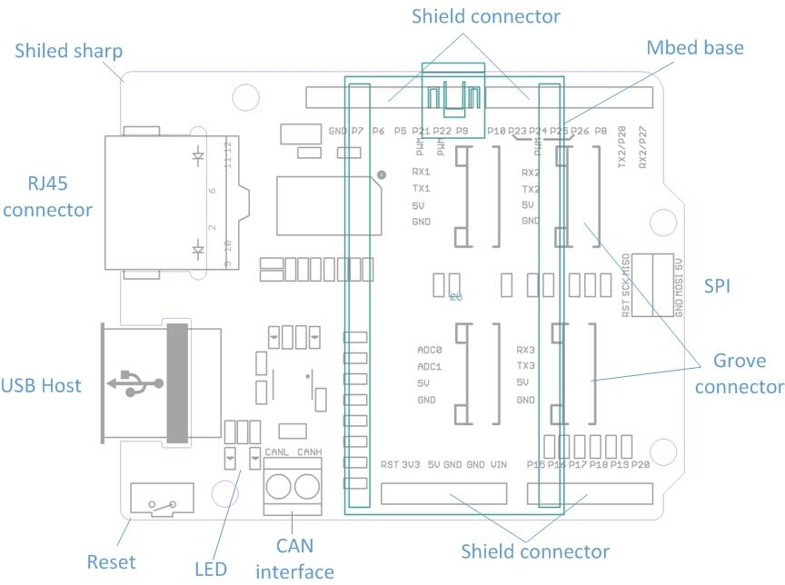
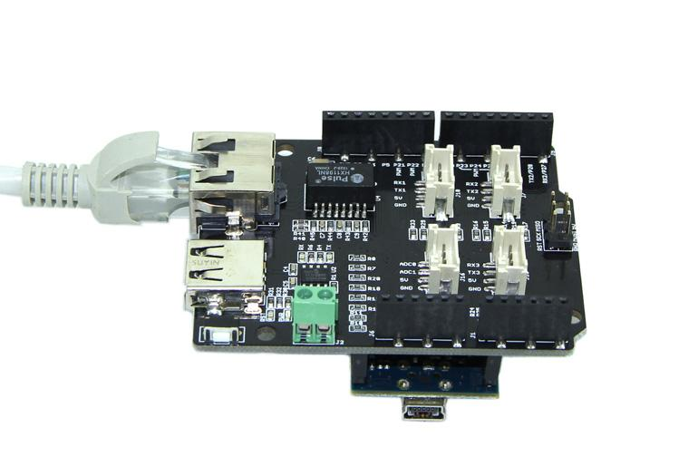
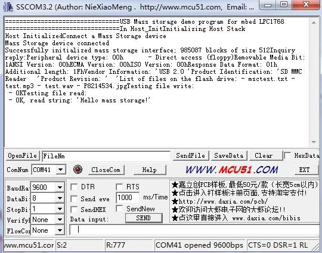
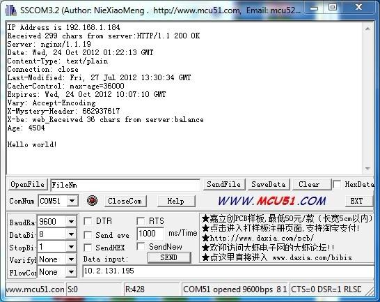
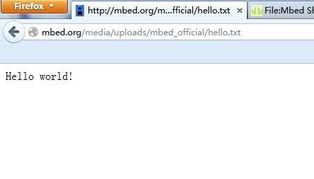

The Mbed Shield is the Mbed application board based on Mbed LPC1768 Prototyping Board. Just try imagine controlling Ethernet devices using environmental data from sensors. It integrates a series of external interfaces,such as CAN, Ethernet, USB and 4 standard Grove sockets, all together on a single board.The Mbed Shield is also compatible with other standard Arduino Shields, providing you an even more powerful extension for your Mbed.
Model: SLD03121P
 


Here is a brief description of how to read the Ethernet data and a removable disk data.</span>
Demo 1: Read a U disk
The Universal Serial Bus (USB) is the most widely used bus in today's computer. USB has particularly been designed to standardize connections between the computer and peripherals. For instance, keyboards, mice, USB audio devices, printers, scanners, disk drives or cameras can use the same bus to exchange data with a computer. A USB device stack has been developed in order to provide all great capabilities from USB to mbed.

Note:

Demo 2: Read a Ethernet data
The example demonstrates how to get started with the Ethernet function.
Note: Delete any unrelated bin files appear in Mbed disk.


If you have questions or other better design ideas, you can go to our forum or wish to discuss.
Copyright (c) 2008-2016 Seeed Development Limited (www.seeedstudio.com / www.seeed.cc)